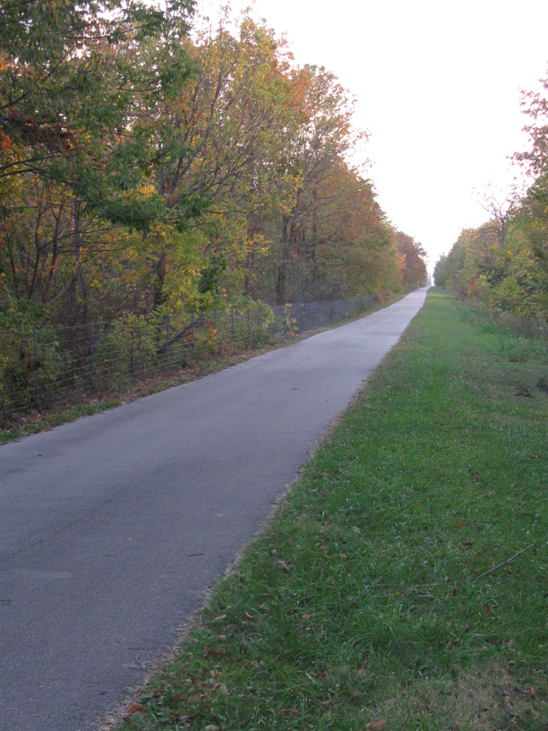

4 Oct 08, Milford, OH
Nice, flat, paved riding today. I also met quite a few people interested in my trip. There were also a lot of helpful folks—two or three who told me about the trail being closed just south of Xenia, then another group of cyclists who held the rope for me to pass through the closed section. I happened to ride into the Spring Valley Potato Festival around 10:30—just in time for my first lunch of the day. It was cool, and I walked up & down the strip before choosing some Cajun style red bean & rice w/sausage lunch, and finishing with french fries for dessert (it was the Potato Festival after all).
